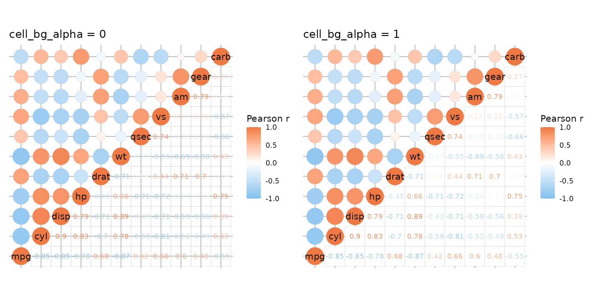
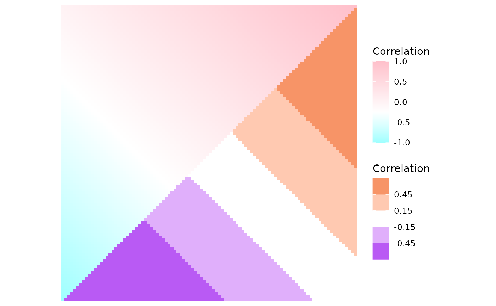
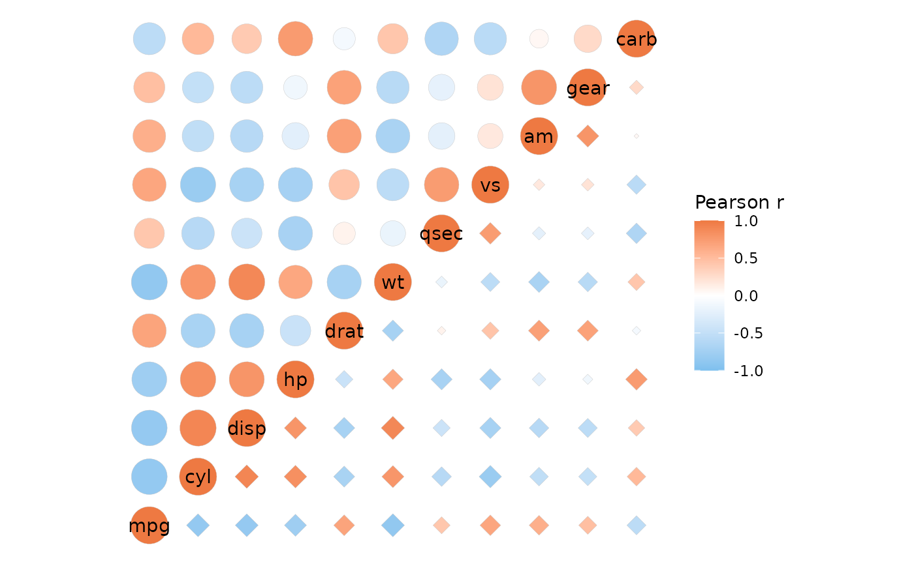
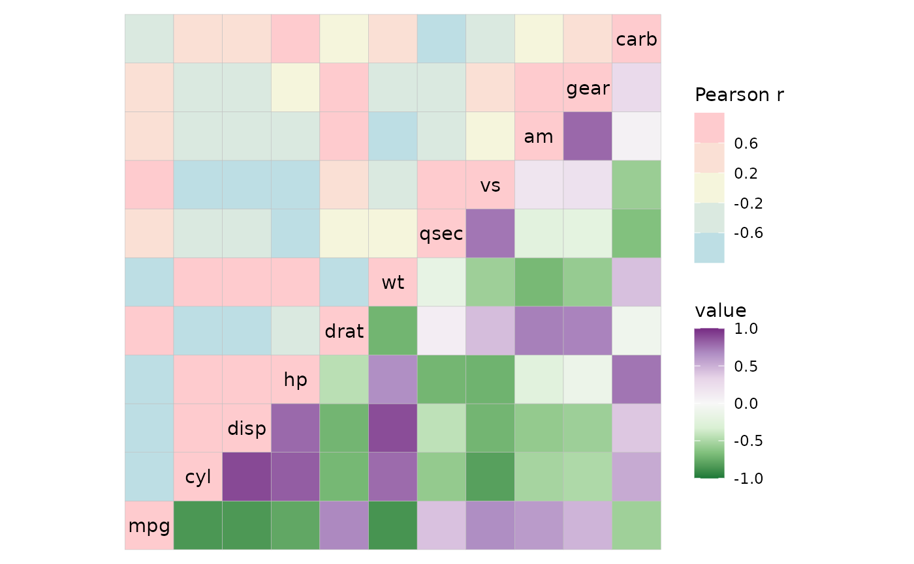
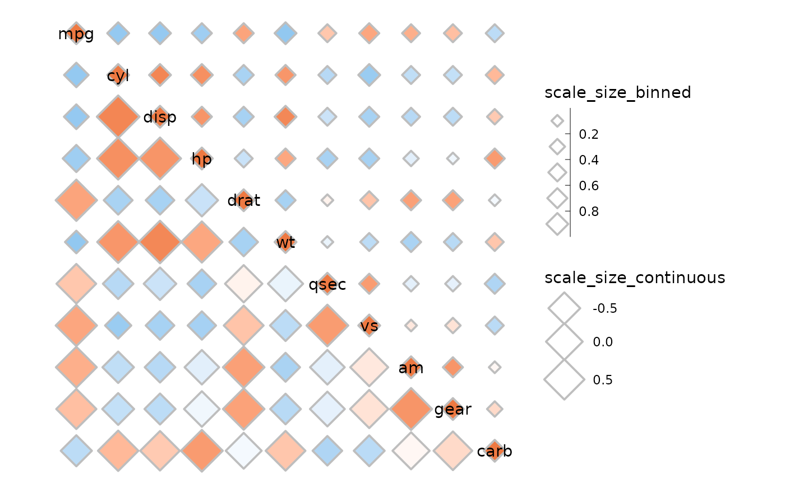

Basics
If the matrix being plotted is symmetric it is possible to plot mixed
layouts by giving two triangles (opposite each other) to the
layout argument. Two modes must be provided, the default
modes being heatmap for the first triangle and
text for the second. The first triangle of
layout gets the diagonal (if include_diag is
TRUE).
plt1 <- ggcorrhm(mtcars, layout = c("tl", "br"))
plt2 <- ggcorrhm(mtcars, layout = c("tl", "br"), mode = c("21", "23"))
plt1 + plt2![Two mtcars correlation heatmaps. The first one is composed of a normal heatmap with filled cells for the top left triangle and cells with coloured text showing the correlation values in the bottom right triangle (the colour scaling with the correlation values). Names are written on the diagonal. The second heatmap has circles in the top left and diamonds in the bottom right, all filled with the same colours in the first heatmap and their sizes scaling with the absolute values of the correlations.](mixed_files/figure-html/unnamed-chunk-2-1.png)
To add a grid for shape modes use ggplot2::theme and the
panel.grid* arguments. If any part of the heatmap uses the
‘text’ or ‘none’ modes, the grid will be visible through the cells. The
cell_bg_col and cell_bg_alpha arguments
control the cell background colour and alpha parameter. By default, the
cell colour is set to white and alpha to 0.
# Grid + default cell background
plt1 <- ggcorrhm(mtcars, layout = c("tl", "br"), mode = c("21", "text")) +
labs(title = "cell_bg_alpha = 0") +
# Add grid, make darker for demonstration
theme(panel.grid.major = element_line(colour = "grey"))
plt2 <- ggcorrhm(mtcars, layout = c("tl", "br"), mode = c("21", "text"),
cell_bg_alpha = 1) +
labs(title = "cell_bg_alpha = 1") +
theme(panel.grid.major = element_line(colour = "grey"))
plt1 + plt2
Since mixed layouts consist of two triangular layout heatmaps, clustering can only be applied if both rows and columns are clustered (like for the simple triangular layouts).
ggcorrhm(mtcars, layout = c("tr", "bl"), cluster_rows = TRUE)
#> Warning: Cannot cluster only one dimension for triangular layouts, clustering both rows
#> and columns instead.If return_data is TRUE there will be an
extra column called layout, showing which triangle each
cell belongs to.
Parameter behaviour
When the layout is mixed, a few arguments can take vectors or lists
of length two. If a vector, each element is applied to the whole
corresponding triangle in layout. If a list is provided,
the elements can be whatever values that would be applicable for
non-mixed layouts, i.e. a single value to apply to the whole triangle,
or a vector with one value for each cell.
The arguments that work like this are border_col,
border_lwd, border_lty,
cell_labels, cell_label_col,
cell_label_size, cell_label_digits,
cell_bg_col, cell_bg_alpha, and (for
ggcorrhm) p_values and
cell_label_p.
colr <- c("#70369D", "#59369D", "#4A44AB", "#486ED8", "#5B9892", "#79C314", "#C6DB28", "#FBDD2B", "#FEB30A", "#F56B08", "#E81416")
ggcorrhm(mtcars, layout = c("bl", "tr"), mode = c("none", "hm"),
# One value for the whole heatmap (border linewidth)
border_lwd = 1.5,
# Length two vector, each value being used for the whole corresponding triangle
border_lty = c(1, 3),
# A list with values for each triangle
border_col = list(
# The first triangle is 66 values (if the diagonal is drawn), second 55
# If not known, can return the plotting data to see how many cells are in each triangle
# Since the matrix must be symmetric the numbers can also be calculated
# Total: ncol*ncol, triangle without diagonal: (total - ncol) / 2, with diagonal: without + ncol
# First triangle, provide all values, moving down each column from the left
rev(unlist(sapply(seq_along(colr), function(i) rep(colr[i], i)))),
# Second triangle, recycle one value
"white"
),
# Also draw cell labels on the first triangle and set the same colours as the cells
cell_labels = c(TRUE, FALSE),
cell_label_col = list(
# Provide the same values as for the cell border colours, but minus one as the diagonal
# names are written instead of cell labels and are controlled differently
rev(unlist(sapply(seq_along(colr), function(i) rep(colr[i], i - 1)))),
1 # Anything as there are no labels
),
names_diag_param = list(colour = rev(colr)))As mentioned above, p-values can be added to only one half of the heatmap if desired. P-values in correlation matrices and mixed layouts are explored more in the correlation matrix article.
plt1 <- ggcorrhm(mtcars, layout = c("tl", "br"), p_values = TRUE,
cell_label_size = c(4, 2))
plt2 <- ggcorrhm(mtcars, layout = c("tl", "br"), p_values = c(FALSE, TRUE),
cell_label_size = 2)
plt1 + plt2
Mixed scales
In mixed layouts the two triangles can use different scales for
colours by using the col_scale argument.
# Two fill scales
ggcorrhm(mtcars, layout = c("br", "tl"), mode = c("21", "hm"),
show_names_diag = FALSE,
col_scale = list(
# When a scale object is passed, arguments of gghm/ggcorrhm
# that modify legends will be ignored.
# 'heatmap' mode and modes 20-25 use the fill aesthetic
scale_fill_gradient2(high = "pink", mid = "white", low = "lightblue",
limits = c(-1, 1), name = "Bottom right"),
"RdYlGn"
),
# col_name can also take two values
col_name = c("This name will be ignored", "Top left"))
Use the guide argument in the ggplot2 scale
functions to set the order or hide legends if a scale object is passed
in the col_scale argument.
# Two colour scales
ggcorrhm(mtcars, layout = c("tr", "bl"), mode = c("19", "text"),
col_scale = list(
# 'text' mode and modes 1-20 use the colour aesthetic and need colour scales
scale_colour_gradient(high = "lightsalmon4", low = "white", limits = c(-1, 1),
# Can use the guide argument to change order of legends (or hide them)
guide = guide_colourbar(order = 1),
name = "First legend"),
scale_colour_distiller(palette = "Spectral", limits = c(-1, 1),
name = "Second legend")
), cell_label_size = 4,
col_name = c("Names that will", "be ignored"))
If one of the scales is NULL, the default scale is used
instead (and can be customised with the high,
mid, low etc arguments).
# NULL uses the default that changes with high, mid, low etc
ggcorrhm(mtcars, layout = c("tl", "br"), mode = c("hm", "hm"),
col_scale = list(
NULL,
# Give a scale object to not be affected by the default scale arguments
scale_fill_distiller(palette = "PRGn", limits = c(-1, 1))
), bins = 5L, high = "pink", mid = "beige", low = "lightblue")It’s also possible to use different scales for the sizes with the
size_scale argument.
ggcorrhm(mtcars, layout = c("tr", "bl"), mode = c(23, 23),
size_scale = list(
# Can make a binned size scale
scale_size_binned(n.breaks = 6, range = c(1, 5),
# Absolute value transform but legend loses meaning
transform = scales::trans_new("abs", abs, abs),
name = "scale_size_binned", guide = guide_bins(order = 1)),
scale_size_continuous(range = c(5, 10), name = "scale_size_continuous")
), border_lwd = 1, legend_order = NA)Some extra plots
When using triangular layouts, annotations and dendrograms are moved to the non-empty sides of the heatmap for convenience. Using mixed layouts with mode “none” it is possible to “hack” annotations and dendrograms onto the empty sides of triangular layouts.
annot <- data.frame(.names = colnames(mtcars), a = 1:11)
ggcorrhm(mtcars, layout = c("tl", "br"), mode = c("hm", "none"),
annot_rows_df = annot, annot_cols_df = annot,
cluster_rows = TRUE, cluster_cols = TRUE,
# Hide cell borders only in the 'none' triangle
border_lwd = c(0.1, 0))
Finally, the default full layout reverses the y axis levels so that the rows are in the same order as in the input and the diagonal runs from top left to bottom right. If the opposite layout is desired it can be made using a mixed layout of a top left and a bottom right triangle, like the plot below.
plt1 <- ggcorrhm(mtcars, layout = "f")
plt2 <- ggcorrhm(mtcars, layout = c("tl", "br"), mode = c("hm", "hm"))
plt1 + plt2